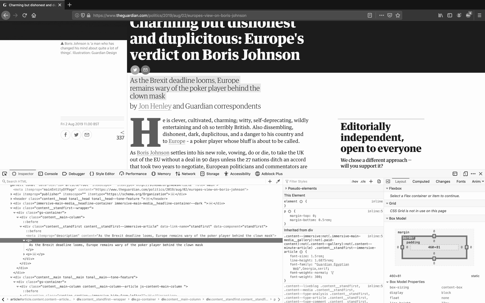
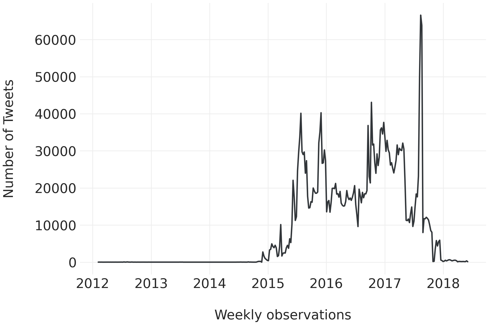

import os
import pandas as pd
import seaborn as sns
import matplotlib.pyplot as plt
from dcss import download_dataset
from dcss import set_style
set_style()4 Processing Data
Learning Objectives
By the end of this chapter, you should be able to:
- Use Pandas to load, manipulate, and summarize data
- Preview data using head, tail, and sample
- Understand Pandas data structures (Series and dataframes), indexes, and
datetimeobjects - Extract subsets of a dataset by selecting columns and filtering rows
- Group observations in a dataframe and perform operations on groups to enable systematic comparisons
- Combine multiple dataframes by row and by column
- Understand the power (and pitfalls) of record linkage
It’s time to shift from using Python as a general programming language to using it to process data using specialized data management and analysis packages. We’re going to rely primarily on two important packages from Python’s “scientific stack.” The first is Pandas, which was created by Wes McKinney for analyzing panel data (hence the name). It comes with special data structures, functions, and methods that you can use to take care of the vast majority of data processing operations for structured quantitative data. The second is Numpy, which is a lower-level package for efficient computation and maths. Numpy is the foundation that many other packages, including Pandas, are built on. We’re not going to cover Numpy in any significant detail here, but it’s worth knowing that Numpy provides arrays of arbitrary size and dimensionality, and is one of the pillars upon which Pandas is built.1
1 Testing footnote location…
In this chapter, I will start with the basics of getting data in and out of Pandas dataframes, and previewing subsets of data. Next, I will dig deeper into Pandas core data structures (Series and dataframes), as well as index and datetime objects. I then discuss more advanced operations, such as grouping data for systematic comparisons, working with datetime objects for time series analysis, and combining dataframes.
Pandas is a very large and complex package with an enormous amount of power, but you don’t have to learn it all at once. In fact, you shouldn’t even try! Like most other packages you will encounter in this book, you will use a small number of features very heavily, and a large number of features very rarely.
Finally, I want to acknowledge that this is the first of several chapters that focus on data processing skills. The focus in this chapter is on understanding how to work with dataframes and Series in Pandas, not on workflows for processing, cleaning, and exploring data. Much of that content is introduced in the chapters on Survey data and Exploratory data analysis.
4.1 Imports
4.2 PRACTICAL PANDAS: FIRST STEPS
4.2.1 Getting Data into Pandas
The Pandas package makes it easy to load data from an external file directly into a dataframe object. It uses one of many reader functions that are part of a suite of I/O (input / output, read / write) tools. I’ve listed some common examples in Table 4.1. Information on these and other reader functions can be found in the Pandas documentation, which also provides useful information about the parameters for each method (e.g. how to specify what sheet you want from an Excel spreadsheet, or whether to write the index to a new CSV file).
| Data Description | Reader | Writer |
|---|---|---|
| CSV | read_csv() |
to_csv() |
| JSON | read_json() |
to_json() |
| MS Excel and OpenDocument (ODF) | read_excel() |
to_excel() |
| Stata | read_stata() |
to_stata() |
| SAS | read_sas() |
NA |
| SPSS | read_spss() |
NA |
I will focus on the read_csv() function to demonstrate the general process. The only required argument is that we provide the path to the file location, but there are many useful arguments that you can pass, such as the file encoding. By default, Pandas assumes your data is encoded with UTF-8. If you see an encoding error or some strange characters in your data, you can try a different encoding, such as latin1.
This chapter will use data from the Varities of Democracy (VDEM) dataset. VDEM is an ongoing research project to measure the level of democracy in governments around the world and updated versions of the dataset are released on an ongoing basis. The research is led by a team of over 50 social scientists who coordinate the collection and analysis of expert assessments from over 3,200 historians and Country Experts (CEs). From these assessments, the VDEM project has created a remarkably complex array of indicators designed to align with five high-level facets of democracy: electoral, liberal, participatory, deliberative, and egalitarian. The dataset extends back to 1789 and is considered the gold standard of quantitative data about global democratic developments. You can find the full codebook online, and I strongly recommend that you download it and consult it as you work with this data. You can find the full dataset at (https://www.v-dem.net/en/data/data/v-dem-dataset-v11/) and the codebook here (https://www.v-dem.net/figures/filer_public/e0/7f/e07f672b-b91e-4e98-b9a3-78f8cd4de696/v-dem_codebook_v8.pdf). The filtered and subsetted version we will use in this book can be downloaded using the download_dataset() function. Note that this will also download additional VDEM materials, including the codebook.
Let’s load the CSV file into a Pandas dataframe.
vdem_data_url = "https://www.dropbox.com/scl/fo/6ay4x2qo4svyo92wbvlxt/ACtUxCDoLYxLujkekHdXiJ4?rlkey=lhmhiasjkv3ndvyxjxapi24sk&st=2p76a0dw&dl=0"
download_dataset(
vdem_data_url,
save_path='data/vdem'
)File already exists at 'data/vdem'. Skipping download.df = pd.read_csv(
'data/vdem/V-Dem-CY-Full+Others-v10.csv',
low_memory=False
)Once you have your data loaded, one of the first things you will want to know is how many rows and columns there are. You can do this using the .shape attribute of the dataframe.
df.shape(27013, 4108)This is a fairly large dataset. It has 27,013 observations and 4,108 variables! First, I will construct a new dataframe from this one that contains only the columns I want.
4.2.2 What Do You Need? Selecting Columns
I will create a list of the variable names I want to retain, and call the original dataframe followed by the name of the list in square brackets. In this case, I will retain the following variables:
- the country name,
- the country ID,
- the geographic region,
- the year,
- the polyarchy index,
- the liberal democracy index,
- the participatory democracy index,
- the deliberative democracy index, and
- the egalitarian democracy index,
- whether Internet users’ privacy and their data is legally protected,
- how polarized the country is on political issues, and
- levels of political violence.
- whether or not the country is a democracy
I will call the new dataframe sdf, for ‘subsetted dataframe.’ Of course, you can call it anything you like. If you are going to be working with multiple dataframes in the same script or notebook, then it’s a good idea to give them much more descriptive names. For now, I am only working with two, so I will use df for the full dataframe and sdf for the dataframe with a subset of the original variables. I will make careful note of any dataframes I add.
subset_vars = [
'country_name',
'country_text_id',
'e_regiongeo',
'year',
'v2x_polyarchy',
'v2x_libdem',
'v2x_partipdem',
'v2x_delibdem',
'v2x_egaldem',
'v2smprivex',
'v2smpolsoc',
'v2caviol',
'e_boix_regime'
]
sdf = df[subset_vars]
sdf.shape(27013, 13)We’ve created a new dataframe called sdf. It still has 27,013 rows, but only 13 variables. We can print their names using the .columns attribute for the dataframe.
list(sdf.columns)['country_name',
'country_text_id',
'e_regiongeo',
'year',
'v2x_polyarchy',
'v2x_libdem',
'v2x_partipdem',
'v2x_delibdem',
'v2x_egaldem',
'v2smprivex',
'v2smpolsoc',
'v2caviol',
'e_boix_regime']4.2.2.1 What’s in Your dataframe?
We can use the .info() method to see: the total number of observations, the total number of columns, the names of the columns, the number of non-missing observations for each, the datatype for each variable, the number of variables that contain data of each type (e.g. integers and floats), and the total amount of memory used by the dataframe.
sdf.info()<class 'pandas.core.frame.DataFrame'>
RangeIndex: 27013 entries, 0 to 27012
Data columns (total 13 columns):
# Column Non-Null Count Dtype
--- ------ -------------- -----
0 country_name 27013 non-null object
1 country_text_id 27013 non-null object
2 e_regiongeo 27013 non-null int64
3 year 27013 non-null int64
4 v2x_polyarchy 25342 non-null float64
5 v2x_libdem 24350 non-null float64
6 v2x_partipdem 24923 non-null float64
7 v2x_delibdem 18557 non-null float64
8 v2x_egaldem 18557 non-null float64
9 v2smprivex 3562 non-null float64
10 v2smpolsoc 3562 non-null float64
11 v2caviol 12745 non-null float64
12 e_boix_regime 16270 non-null float64
dtypes: float64(9), int64(2), object(2)
memory usage: 2.7+ MBThe datatypes in this dataframe are float64 (numbers with decimals), int64 (integers), and object. In Pandas, object refers to columns that contain strings, or mixed types, such as strings and integers (object encompasses many more things, too: it’s a catchall category). Pandas can also work with booleans (True or False), categorical variables, and some specialized datetime objects. Recall how we selected columns to make our dataset. In the code below, I use the same idea to show only a few variables, rather than all 35, to save space. We will explain this a little more later in the chapter.
We can also use the .describe() method to get summary information about the quantitative variables in our dataset, including the number of non-missing information, the mean and standard deviation, and a five number summary:
sdf[['e_regiongeo', 'year', 'v2x_polyarchy']].describe()| e_regiongeo | year | v2x_polyarchy | |
|---|---|---|---|
| count | 27013.000000 | 27013.000000 | 25342.000000 |
| mean | 9.266575 | 1926.556177 | 0.262821 |
| std | 5.733007 | 63.754335 | 0.260966 |
| min | 1.000000 | 1789.000000 | 0.007000 |
| 25% | 4.000000 | 1878.000000 | 0.057000 |
| 50% | 8.000000 | 1937.000000 | 0.171500 |
| 75% | 14.000000 | 1980.000000 | 0.367000 |
| max | 19.000000 | 2019.000000 | 0.924000 |
4.2.3 Heads, Tails, and Samples
We can also inspect the “head” or the “tail” of our dataframe using the .head() and .tail() methods, which default to the first or last 5 rows in a dataframe unless you provide a different number as an argument, such as .head(10).
sdf[['country_name', 'year', 'v2x_libdem']].head()| country_name | year | v2x_libdem | |
|---|---|---|---|
| 0 | Mexico | 1789 | 0.043 |
| 1 | Mexico | 1790 | 0.040 |
| 2 | Mexico | 1791 | 0.040 |
| 3 | Mexico | 1792 | 0.040 |
| 4 | Mexico | 1793 | 0.040 |
Testing tufte-style margin notes…
sdf[['country_name', 'year', 'v2x_libdem']].tail(3)| country_name | year | v2x_libdem | |
|---|---|---|---|
| 27010 | Piedmont-Sardinia | 1859 | 0.150 |
| 27011 | Piedmont-Sardinia | 1860 | 0.148 |
| 27012 | Piedmont-Sardinia | 1861 | 0.149 |
If you would prefer a random sample of rows, you can use the .sample() method, which requires you to specify the number of rows you want to sample.
sdf[['country_name', 'year', 'v2x_libdem']].sample(15)| country_name | year | v2x_libdem | |
|---|---|---|---|
| 10718 | Costa Rica | 1917 | 0.127 |
| 7242 | Thailand | 1931 | 0.068 |
| 8535 | Nepal | 1866 | NaN |
| 24113 | Sao Tome and Principe | 2002 | 0.567 |
| 18811 | German Democratic Republic | 1954 | 0.067 |
| 14760 | Turkey | 1823 | 0.030 |
| 25047 | Vanuatu | 1919 | 0.149 |
| 23484 | Oman | 1933 | 0.020 |
| 21673 | Hong Kong | 1984 | 0.211 |
| 14552 | Tunisia | 1846 | 0.025 |
| 10362 | Central African Republic | 1974 | 0.036 |
| 2563 | Poland | 1949 | 0.104 |
| 20899 | Estonia | 1929 | 0.597 |
| 21142 | Finland | 1891 | 0.170 |
| 547 | Sweden | 1985 | 0.868 |
4.2.4 What Do You Need? Filtering Rows
When we executed the .describe() method earlier, you may have noticed that the range for the year variable is 1789-2019. Let’s say we have a good reason to focus on the years from 1900-2019. We will have to filter the data to have only the rows that meet my needs.
There are several ways to filter rows, including slices (e.g. all observations between index \(i\) and index \(j\)), or according to some sort of explicit condition, such as “rows where the year >= 1900.” Note that when we filter or slice a dataframe, the new object is just a view of the original and still refers to the same data. Pandas will warn us if we try to modify the filtered object, so a lot of the time, things are smoother if we make a new copy.
rowfilter = sdf['year'] >= 1900
fsdf = sdf[rowfilter].copy()
fsdf.info()<class 'pandas.core.frame.DataFrame'>
Index: 18787 entries, 111 to 25622
Data columns (total 13 columns):
# Column Non-Null Count Dtype
--- ------ -------------- -----
0 country_name 18787 non-null object
1 country_text_id 18787 non-null object
2 e_regiongeo 18787 non-null int64
3 year 18787 non-null int64
4 v2x_polyarchy 18663 non-null float64
5 v2x_libdem 18424 non-null float64
6 v2x_partipdem 18587 non-null float64
7 v2x_delibdem 18557 non-null float64
8 v2x_egaldem 18557 non-null float64
9 v2smprivex 3562 non-null float64
10 v2smpolsoc 3562 non-null float64
11 v2caviol 12745 non-null float64
12 e_boix_regime 11841 non-null float64
dtypes: float64(9), int64(2), object(2)
memory usage: 2.0+ MBWe could also do this using the .query() method, which accepts a boolean expression as a string.
alternate_fsdf = sdf.query('year >= 1900').copy()
alternate_fsdf.info()<class 'pandas.core.frame.DataFrame'>
Index: 18787 entries, 111 to 25622
Data columns (total 13 columns):
# Column Non-Null Count Dtype
--- ------ -------------- -----
0 country_name 18787 non-null object
1 country_text_id 18787 non-null object
2 e_regiongeo 18787 non-null int64
3 year 18787 non-null int64
4 v2x_polyarchy 18663 non-null float64
5 v2x_libdem 18424 non-null float64
6 v2x_partipdem 18587 non-null float64
7 v2x_delibdem 18557 non-null float64
8 v2x_egaldem 18557 non-null float64
9 v2smprivex 3562 non-null float64
10 v2smpolsoc 3562 non-null float64
11 v2caviol 12745 non-null float64
12 e_boix_regime 11841 non-null float64
dtypes: float64(9), int64(2), object(2)
memory usage: 2.0+ MBOur final dataframe – which I have called fsdf for filtered and subsetted dataframe – now has 13 columns (from 4,108) and 18,787 observations (from 27,013).
4.2.5 Writing Data to Disk
Just as I read our initial CSV file into Pandas using the read_csv() function, I can write this new dataframe to disk using the write_csv() function.
fsdf.to_csv('data/vdem_filtered_subset.csv', index=False)4.3 UNDERSTANDING PANDAS DATA STRUCTURES
Now let’s discuss Pandas’ main data structures, Series and DataFrames, and how they relate to one another.
4.3.1 The Series
Each column in a dataframe is an object called a Series. A Series is a one-dimensional object (e.g. a vector of numbers) with an index, which is itself a vector, or array, of labels.
For example, the column v2x_delibdem in fsdf is a Series containing floats and the index label for each observation. Printing a sample of 15 observations gives me a numerical index for each observation on the left and the actual value on the right. The index values are ordered in the Series itself, but they are out of sequence here because we pulled a random sample. As this is for demonstration purposes, I’ve included a random_state value to ensure you get the same sample that I do if you re-run this block.
fsdf['v2x_delibdem'].sample(15, random_state = 42)8437 0.305
25197 0.059
6661 0.079
19266 0.390
7633 0.632
1230 0.727
8829 0.020
10118 0.008
8996 0.047
2360 0.048
18407 0.018
153 0.132
10794 0.805
14375 0.800
24240 NaN
Name: v2x_delibdem, dtype: float64In most cases, the default index for a Series or dataframe is an immutable vector of integers:
fsdf.indexIndex([ 111, 112, 113, 114, 115, 116, 117, 118, 119, 120,
...
25613, 25614, 25615, 25616, 25617, 25618, 25619, 25620, 25621, 25622],
dtype='int64', length=18787)We can easily modify an index so that it is made of up some other type of vector instead, including a string. Surprisingly, index values do not need to be unique. This enables some powerful techniques, but most of the time, you should avoid manually changing indexes.
4.3.1.1 Accessing a Specific Row by its Index
We can use the index to retrieve specific rows from a dataframe or specific values from a Series, much as we would if we were selecting an element from a list, tuple, or array. The easiest way to do this is to pass the index value (e.g. 202) to .loc[]. As you can see below, the result is the observation-specific value for each variable in the dataframe.
fsdf.loc[202]country_name Mexico
country_text_id MEX
e_regiongeo 17
year 1991
v2x_polyarchy 0.435
v2x_libdem 0.221
v2x_partipdem 0.246
v2x_delibdem 0.31
v2x_egaldem 0.214
v2smprivex NaN
v2smpolsoc NaN
v2caviol -0.71
e_boix_regime 0.0
Name: 202, dtype: objectfsdf['v2x_delibdem'].loc[202]0.31fsdf['v2x_delibdem'].loc[20000]0.081Note that .loc does not refer to the 202nd row of the dataframe. If you were looking closely at the .index command above, you might have noticed the dataframe only contains 18,787 rows but .loc can still return row 20,000 - the index didn’t change when you removed a bunch of rows from the dataframe. Think of .loc as accessing a dictionary of the index values - it will even give a KeyError if you ask for an element that doesn’t exist.
Instead, if we want the access the n-th row of a dataframe, we can use .iloc[n]. Think of the index as a list and you’re referring to an element of that list by its list index. Let’s use .iloc to select the last element in the dataframe. Note that the index position for the last element will be 18,786 even though the dataframe length is 18,787, because Python data structures are almost always 0-indexed. Here you see the index of the row, which was formerly the row number, as the Name at the bottom.
fsdf.iloc[18786]country_name Zanzibar
country_text_id ZZB
e_regiongeo 8
year 2019
v2x_polyarchy 0.245
v2x_libdem 0.18
v2x_partipdem 0.083
v2x_delibdem 0.183
v2x_egaldem 0.187
v2smprivex -1.843
v2smpolsoc -0.848
v2caviol -0.181
e_boix_regime NaN
Name: 25622, dtype: objectIf there isn’t a reason to retain the original indexing of the unfiltered dataframe, it’s usually a good idea to reset the index.
fsdf.reset_index(inplace = True, drop = True)
fsdf.loc[18786]country_name Zanzibar
country_text_id ZZB
e_regiongeo 8
year 2019
v2x_polyarchy 0.245
v2x_libdem 0.18
v2x_partipdem 0.083
v2x_delibdem 0.183
v2x_egaldem 0.187
v2smprivex -1.843
v2smpolsoc -0.848
v2caviol -0.181
e_boix_regime NaN
Name: 18786, dtype: objectAfterwards, .loc and .iloc become fairly interchangeable, with a few exceptions: .loc has dictionary-like capabilities whereas .iloc is more list-like. Now, let’s take a closer look at the dataframe.
4.3.2 Dataframes
Dataframes in Pandas are really just collections of Series that are aligned on the same index values. In other words, the Series we worked with previously have their own indices when we work with them as standalone Series, but in the fsdf dataframe, they share an index.
As you’ve already seen, dataframes are organized with variables in the columns and observations in the rows, and you can grab a single Series from a dataframe using square brakets – let’s do that now, using the fsdf dataframe:
deliberative = fsdf['v2x_delibdem']Note that we can also use dot notation to select columns. fsdf.v2x_delibdem is functionally equivalent to fsdf['v2x_delibdem'], and may be used interchangeably.
We are not limited to selecting columns that already exist in our dataset. You can also create and add new ones. For example, you can create a new column called “21 Century” and assign Boolean value based on whether the observation is in the 2000s.
fsdf['21 Century'] = fsdf['year'] >= 2000
fsdf[['21 Century']].value_counts().reset_index()| 21 Century | count | |
|---|---|---|
| 0 | False | 15225 |
| 1 | True | 3562 |
Sometimes, the new columns created are transformations of a Series that already exists in the dataframe. For example, you can create a new missing_political_violence_data column which will be True when the v2caviol Series (levels of political violence) is empty and False otherwise.
fsdf['missing_political_violence_data'] = fsdf['v2caviol'].isna()
fsdf['missing_political_violence_data'].value_counts().reset_index()| missing_political_violence_data | count | |
|---|---|---|
| 0 | False | 12745 |
| 1 | True | 6042 |
As you can see from executing value_counts(), there is missing data on levels of political violence for 6042 observations.
4.3.3 Missing Data
It’s important to understand how missing data is handled. Missing data is common in real-world datasets, and it can be missing for multiple reasons! Generally, Pandas uses the np.nan value to represent missing data. NumPy’s np.nan value is a special case of a floating point number representing an unrepresentable value. These kinds of values are called NaNs (Not a Number).
import numpy as np
type(np.nan)floatnp.nan cannot be used in equality tests, since any comparison to a np.nan value will evaluate as False. This includes comparing np.nan to itself.
n = np.nan
n == nFalsenp.nan values do not evaluate to False or None. This can make it difficult to distinguish missing values. You can use the np.isnan() function for this purpose, and it is especially useful in control flow.
if np.nan is None:
print('NaN is None')
if np.nan:
print('NaN evaluates to True in control flow')
if np.isnan(np.nan):
print('NaN is considered a NaN value in NumPy')NaN evaluates to True in control flow
NaN is considered a NaN value in NumPyAdditionally, np.nan values are generally excluded from Pandas functions that perform calculations over dataframes, rows, or columns. For example, documentation often stipulates that a calculation is done over all values, excluding NaN or NULL values.
total = len(fsdf['v2caviol'])
count = fsdf['v2caviol'].count()
print(f'Total: {total}')
print(f'Count: {count}')
print(f'Diff: {total-count}')Total: 18787
Count: 12745
Diff: 6042The total number of items in the v2caviol column (political violence) is much higher than the counts received from the count() function. If what we learned above is correct, this difference should be accounted for when we discover how many items in this column are NaNs.
nans = fsdf['v2caviol'].isna().sum()
print(' NaNs: {}'.format(nans)) NaNs: 6042As you can probably tell, the .isna() method, which is similar to np.isnan() but covers additional cases, can be very useful in transforming and filtering data.
4.4 AGGREGATION & GROUPED OPERATIONS
Data analysis projects often involve aggregation or grouped operations. For example, we might want to compute and compare summary statistics for observations that take different values on a categorical variable. It can be helpful to be able to carve up the dataset itself, performing operations on different subsets of data. We’re going to do that using the .groupby() method, which partitions the dataframe into groups based on the values of a given variable. We can then perform operations on the resulting groups. Let’s group our countries into geographic regions using the e_regiongeo variable.
grouped = fsdf.groupby('e_regiongeo')The above code returns a grouped object that we can work with. Let’s say we want to pull out a specific group, like South East Asia, which is represented in the data using the numerical ID 13. I know this because the relevant information is provided in the VDEM codebook, which I suggest you keep open whenever you are working with the VDEM data.
We can use the get_group() method to pull a group from the grouped object. (Note that the .get_group() code below is equivalent to fsdf[fsdf['e_regiongeo'] == 13].)
south_east_asia = grouped.get_group(13)
south_east_asia[['country_name', 'year', 'e_boix_regime']].head()| country_name | year | e_boix_regime | |
|---|---|---|---|
| 838 | Burma/Myanmar | 1900 | NaN |
| 839 | Burma/Myanmar | 1901 | NaN |
| 840 | Burma/Myanmar | 1902 | NaN |
| 841 | Burma/Myanmar | 1903 | NaN |
| 842 | Burma/Myanmar | 1904 | NaN |
The data stored in south_east_asia are all of the observations of South East Asian countries in the VDEM data, stored now in their own dataframe. .get_group() is yet another way to extract a subset of a dataframe (by way of a groupby object), and is especially useful when the subset of data you want to work with is only observations with a particular value for a categorical variable in your data.
Generally speaking, when we group a dataset like this it’s because we want to compute something for a group within the dataset, or for multiple groups that we want to compare. We can do this by specifying the grouped object, the Series we want to perform an operation on, and finally the operation we want to perform. For example, let’s compute the median polyarchy score for countries in each of the regions in the dataset.
poly = grouped['v2x_polyarchy'].median()
poly.head()e_regiongeo
1 0.7940
2 0.8170
3 0.3890
4 0.2385
5 0.0955
Name: v2x_polyarchy, dtype: float64It would be more useful to see the name of the region rather than its numeric label. We can do this by creating a dictionary that maps the numeric IDs to the region name, and then use the .map() method to tell Pandas were to lookup the values it needs to create a new column with the country names. First, the dictionary:
regions = {
1:'Western Europe',
2:'Northern Europe',
3:'Southern Europe',
4:'Eastern Europe',
5:'Northern Africa',
6:'Western Africa',
7:'Middle Africa',
8:'Eastern Africa',
9:'Southern Africa',
10:'Western Asia',
11:'Central Asia',
12:'East Asia',
13:'South-East Asia',
14:'South Asia',
15:'Oceania', # (including Australia and the Pacific)
16:'North America',
17:'Central America',
18:'South America',
19:'Caribbean' # (including Belize Cuba Haiti Dominican Republic)
}And now we can pass this dictionary into the .map() method applied to the fsdf['e_regiongeo'] Series, creating a new Series called fsdf['Region']
fsdf['Region'] = fsdf['e_regiongeo'].map(regions)It is also possible to group by multiple variables, such as geographic region and year, and then perform an operation on those slightly more fine-grained groups. This will result in 2,211 groups, so we will preview a random sample of 10.
grouped = fsdf.groupby(['Region', 'year'])
poly = grouped['v2x_polyarchy'].median()
poly.reset_index()
pd.DataFrame(poly).reset_index().sample(10)| Region | year | v2x_polyarchy | |
|---|---|---|---|
| 142 | Central America | 1922 | 0.1835 |
| 1870 | Western Africa | 1919 | 0.0390 |
| 1104 | Northern Europe | 1993 | 0.8705 |
| 1384 | South Asia | 1913 | 0.0350 |
| 2049 | Western Asia | 1978 | 0.0855 |
| 1369 | South America | 2018 | 0.7115 |
| 1286 | South America | 1935 | 0.2010 |
| 1710 | Southern Africa | 1999 | 0.6650 |
| 1725 | Southern Africa | 2014 | 0.6730 |
| 345 | East Asia | 1954 | 0.1560 |
We can perform other types of operations on the grouped object itself, such as computing the number of observations in each group (equivalent to value_counts()).
grouped.size().sort_values(ascending=False)Region year
Eastern Africa 2015 20
2012 20
2019 20
2018 20
2017 20
..
Central Asia 1904 1
1903 1
1902 1
1901 1
1914 1
Length: 2211, dtype: int64Finally, we can perform multiple operations on a grouped object by using the agg() method. The agg() method will apply one or more aggregate functions to a grouped object, returning the results of each.
with_agg = grouped['v2x_polyarchy'].agg([min, np.median, 'max', 'count'])
with_agg.reset_index().sample(10)| Region | year | min | median | max | count | |
|---|---|---|---|---|---|---|
| 879 | North America | 2008 | 0.849 | 0.8790 | 0.909 | 2 |
| 1923 | Western Africa | 1972 | 0.014 | 0.1785 | 0.494 | 16 |
| 929 | Northern Africa | 1938 | 0.015 | 0.0460 | 0.130 | 6 |
| 1376 | South Asia | 1905 | 0.010 | 0.0330 | 0.146 | 7 |
| 2077 | Western Asia | 2006 | 0.020 | 0.3250 | 0.844 | 18 |
| 109 | Caribbean | 2009 | 0.177 | 0.7070 | 0.804 | 6 |
| 1281 | South America | 1930 | 0.030 | 0.2010 | 0.588 | 12 |
| 1279 | South America | 1928 | 0.029 | 0.2015 | 0.592 | 12 |
| 1713 | Southern Africa | 2002 | 0.137 | 0.6510 | 0.764 | 5 |
| 1765 | Southern Europe | 1934 | 0.060 | 0.1740 | 0.562 | 7 |
We can even define our own function for agg() to use! If we’re willing to pass a dictionary, .agg() also lets us apply different functions to multiple variables at the same time! Instead of passing one list per function, you can use a dictionary where the column names are the keys and the functions are the values (you can also pass a list of functions) to perform some truly involved aggregration all in one line of code.
4.5 WORKING WITH TIME SERIES DATA
Many real world datasets include a temporal component. This is especially true if you are working with data that comes from the web, which may have precise timestamps for things like the time an email was sent, or a news story was published. Strings are often used to store dates and times, but this is not ideal because strings don’t take advantage of the unique properties of time. It is difficult to sort dates if they are stored in strings with strange formats, for example.
"Monday Mar 2, 1999" > "Friday Feb 21, 2020"TrueExtracting features like day, month, or timezone from strings can be time-consuming an error-prone. This is why Pandas and Python have implemented special types for date/time objects, called [Timestamp](https://pandas.pydata.org/pandas-docs/stable/reference/api/pandas.Timestamp.html) and [Datetime](https://docs.python.org/2/library/datetime.html), respectively. These are essentially equivalent to one another.
The VDEM data contains an enormous amount of temporal data, but all at the level of the year. Let’s switch over to a different dataset that has more fine-grained temporal data, and more closely resembles data that you would obtain from the web. In this case, we are going to use some data on Russian information operations targeting the 2016 American Presidential Election. You can read a bit about this data on the FiveThirtyEight blogpost Why We’re Sharing 3 Million Russian Troll Tweets.
Unlike the VDEM data, the Russian Troll Tweets come as a collection of csv files. We will use a clever little trick to load up all the data in a single dataframe. The code block below iterates over each file in the russian-troll-tweets/ subdirectory in the data directory. If the file extension is csv, is reads the csv into memory as a dataframe. All of the dataframes are then concatenated into a single dataframe containing data on ~ 3M tweets.
russian_troll_data_url = "https://www.dropbox.com/scl/fo/a3uxioa2wd7k8x8nas0iy/AH5qjXAZvtFpZeIID0sZ1xA?rlkey=p1471igxmzgyu3lg2x93b3r1y&st=xvhtn8gi&dl=0"
download_dataset(
russian_troll_data_url,
save_path='data/russian_troll_tweets'
)File already exists at 'data/russian_troll_tweets'. Skipping download.data_dir = os.listdir("data/russian_troll_tweets/")
files = [f for f in data_dir if 'csv' in f]
tweets_df = pd.concat((pd.read_csv(
f'{"data/russian_troll_tweets/"}/{f}',
encoding='utf-8', low_memory=False) for f in files), ignore_index=True)
tweets_df.info()<class 'pandas.core.frame.DataFrame'>
RangeIndex: 2946207 entries, 0 to 2946206
Data columns (total 21 columns):
# Column Dtype
--- ------ -----
0 external_author_id object
1 author object
2 content object
3 region object
4 language object
5 publish_date object
6 harvested_date object
7 following int64
8 followers int64
9 updates int64
10 post_type object
11 account_type object
12 retweet int64
13 account_category object
14 new_june_2018 int64
15 alt_external_id object
16 tweet_id int64
17 article_url object
18 tco1_step1 object
19 tco2_step1 object
20 tco3_step1 object
dtypes: int64(6), object(15)
memory usage: 472.0+ MBAs you can see, we have two datatypes in our dataframe: object and int64. Remember that Pandas uses object to refer to columns that contain strings, or which contain mixed types, such as strings and integers. In this case, they refer to strings.
One further thing to note about this dataset: each row is a tweet from a specific account, but some of the variables describe attributes of the tweeting accounts, not of the tweet itself. For example, followers describes the number of followers that the account had at the time it sent the tweet. This makes sense, because tweets don’t have followers, but accounts do. We need to keep this in mind when working with this dataset.
We can convert date strings from a column or Series into Timestamps using the to_datetime function. We will do that here, assigning the new datetime objects to new variables. Note that this code will take a bit of time to run when executed on all 3 million tweets (if your computer isn’t the strongest, you might want to consider first using tweets_df.sample() to reduce the size of the dataframe).
tweets_df['dt_publish_date'] = pd.to_datetime(
tweets_df['publish_date']
)
tweets_df['dt_harvested_date'] = pd.to_datetime(
tweets_df['harvested_date']
)tweets_df[['author', 'content', 'publish_date']].sample(5)| author | content | publish_date | |
|---|---|---|---|
| 27791 | ADDIE_HOL | do u ever just wish you could delete certain m... | 7/4/2015 9:40 |
| 2131074 | JAYDAASTONISHIN | ▶@EurWeb: The Inaugural Black Men XCEL Summit ... | 7/27/2017 7:52 |
| 872636 | PAMELAKEALER13 | Clinton Privilege?� https://t.co/k1E4eEAYDT | 6/16/2016 1:45 |
| 1300460 | STLOUISONLINE | After six innings, Cubs still up 2-1 over Card... | 4/20/2016 2:55 |
| 2496695 | BEEATRWL | RT 2_tts: the smart ones are moving to other s... | 8/2/2017 0:31 |
In order, the datetime object fields are as follows: year-month-day hour:minute:second:microsecond. To retrieve an integer corresponding to the month when the tweet was published:
tweets_df['dt_publish_date'].dt.month0 10
1 10
2 10
3 10
4 10
..
2946202 2
2946203 2
2946204 2
2946205 2
2946206 2
Name: dt_publish_date, Length: 2946207, dtype: int32When our date and time variables are stored as datetime objects, we can access many time-specific attributes using dot notation. The Pandas documentation includes many examples of the kinds of temporal units and other functionality.
We can also sort our dataframe based on publish_date because Pandas knows that it is working with datetime objects.
sorted_df = tweets_df.sort_values(['dt_publish_date'])We can also add and subtract datetime columns to create new columns.
tweets_df['days_until_harvest'] = tweets_df['dt_harvested_date'] - tweets_df['dt_publish_date']
tweets_df['days_until_harvest'].sample(10)2760041 0 days 00:01:00
194888 0 days 00:00:00
2124379 0 days 00:00:00
663131 0 days 00:00:00
1263490 0 days 00:00:00
2435599 0 days 00:00:00
2865883 0 days 00:00:00
2207952 0 days 00:00:00
2262092 0 days 00:01:00
1231374 0 days 00:02:00
Name: days_until_harvest, dtype: timedelta64[ns]Let’s create new variables for the Year, Month, and Day each tweet was created on. We can do this by using the year, month, and day attributes on the datetime object.
tweets_df['Year'] = tweets_df['dt_publish_date'].dt.year
tweets_df['Month'] = tweets_df['dt_publish_date'].dt.month
tweets_df['Day'] = tweets_df['dt_publish_date'].dt.dayPandas offers specialized tools for grouping data into various segments of time. This involves converting a time series at one level into another (e.g. from days to weeks), and is known as resampling. Within resampling broadly, upsampling aggregates dates / times and downsampling disaggregates dates / times. Let’s upsample our data to plot the number of Tweets per day.
The first thing we will do is use the datetime object dt_publish_date as an index. This will let us easily group observations by resampling dates.
tweets_df = tweets_df.set_index('dt_publish_date')We can now use the .resample() method with the argument D to specify that we want to group by day. The table below provides some other options you can use when resampling dates.
| Value | Description |
|---|---|
| B | business day frequency |
| C | custom business day frequency (experimental) |
| D | calendar day frequency |
| W | weekly frequency |
| M | month end frequency |
| BM | business month end frequency |
| CBM | custom business month end frequency |
| MS | month start frequency |
| BMS | business month start frequency |
| CBMS | custom business month start frequency |
| Q | quarter end frequency |
| BQ | business quarter endfrequency |
| QS | quarter start frequency |
| BQS | business quarter start frequency |
| A | year end frequency |
| BA | business year end frequency |
| AS | year start frequency |
| BAS | business year start frequency |
| BH | business hour frequency |
| H | hourly frequency |
| T | minutely frequency |
| S | secondly frequency |
| L | milliseonds |
| U | microseconds |
| N | nanosecondsa |
We will also use the .size() method to determine the number of tweets that were produced each day.
grouped_cal_day = tweets_df.resample('D').size()
grouped_cal_daydt_publish_date
2012-02-02 4
2012-02-03 0
2012-02-04 1
2012-02-05 1
2012-02-06 3
..
2018-05-26 44
2018-05-27 49
2018-05-28 43
2018-05-29 49
2018-05-30 32
Freq: D, Length: 2310, dtype: int64At this point, we are going to visualize the results of our work with a line plot. We are going to do this with the Seaborn and matplotlib packages, which we will discuss in the next chapter. For now, focus on the visualization and ignore the code. The code blocks below produces Figures Figure 9.1 and Figure 9.2.
sns.lineplot(data=grouped_cal_day, color='#32363A')
sns.despine()
plt.savefig('figures/06_01.png', dpi=300)
Days may not be the best unit of time to work with in this case. We can, of course, upsample from days to weeks instead, and produce the same plot.
weekly = tweets_df.resample('W').size()
weekly.head()dt_publish_date
2012-02-05 6
2012-02-12 14
2012-02-19 5
2012-02-26 11
2012-03-04 1
Freq: W-SUN, dtype: int64ax = sns.lineplot(data=weekly, color='#32363A')
ax.set_xlabel('\nWeekly observations')
ax.set_ylabel('Number of Tweets\n')
sns.despine()
plt.savefig('figures/06_02.png', dpi=300)
The plot is much cleaner when we count at the level of weeks rather than days.
4.6 COMBINING DATAFRAMES
Combining dataframes is a very common task. In fact, though it might not seem obvious, combining datasets is one of the most valuable skills you can have when doing computational social science. Here, we will consider some of the most common approaches: concatenating and merging, and we will briefly describe a more advanced set of methods commonly referred to as record linkage.
Concatenating a dataframe is conceptually pretty simple - think of it like attaching the rows or columns of one dataframe below/to the right of the last row/column of another dataframe. For this to be useful, the two dataframes should have at least one row or column in common, but usually you would only concatenate if there were many such overlapping entries.
full_df = pd.read_csv("data/vdem/filtered_subset.csv")
df_australia = full_df.query("country_name == 'Australia'")
len(df_australia)120df_sa = full_df.query("country_name == 'South Africa'")
len(df_sa)120The default behaviour for pd.concat() is to perform a row-wise join, which it refers to as axis=0. We can override this default by specifying axis=1, which will produce a column-wise join:
concatenated = pd.concat([df_australia, df_sa], axis=1)
len(concatenated)240When we concatenate the two dataframes the number of columns stays the same but the number of rows increases, accounting for the rows in both the original dataframes. Normally, this kind of concatenation would result in a different number of columns, but in this case, the two dataframes we joined had the exact same columns (which makes sense, given that they were both extracted from the same parent dataframe).
4.6.1 Merging
An alternative way to combine datasets is to merge them. If you want to create a dataframe that contains columns from multiple datasets but is aligned on rows according to some column (or set of columns), you probably want to use the merge() function. To illustrate this, we will work with data from two different sources. The first is the VDEM data we used in first part of this chapter (fsdf). The second is a dataset from Freedom House on levels of internet freedom in 65 countries. More information is available at https://freedomhouse.org/countries/freedom-net/scores.
download_dataset(
'https://www.dropbox.com/scl/fo/fnw5yrslxza9plhqnqhxr/AA7997oGIdd3k3EjluHyLBc?rlkey=hr93qtcdp6uh7d3lsfzbc6nr6&st=bz0xzw41&dl=0',
'data/freedom_house/'
)
freedom_df = pd.read_csv( "data/freedom_house/internet_freedoms_2020.csv")File already exists at 'data/freedom_house/'. Skipping download.To merge these dataframes we need to find a column which can be used to match rows from one dataframe to the rows in the other. The columns don’t need to have the same name, just values that can be matched with one another. Whatever columns we choose will be called “keys” in our merge. In our case this will be the country name columns from each dataset.
fsdf.columnsIndex(['country_name', 'country_text_id', 'e_regiongeo', 'year',
'v2x_polyarchy', 'v2x_libdem', 'v2x_partipdem', 'v2x_delibdem',
'v2x_egaldem', 'v2smprivex', 'v2smpolsoc', 'v2caviol', 'e_boix_regime',
'21 Century', 'missing_political_violence_data', 'Region'],
dtype='object')freedom_df.columnsIndex(['Country', 'Total Score', 'Status', 'Obstacles to Access',
'Limits on Content', 'Violations of User Rights'],
dtype='object')We will use the merge function to combine these two dataframes using ‘country_name’ and ‘Country’. We’re going to do an inner merge, which is the default if the option isn’t set, and will keep only the keys (ie. countries) that appear in both dataframes.
merged = pd.merge(fsdf, freedom_df, how='inner', left_on='country_name', right_on='Country')
print('merged has {} rows and {} columns'.format(len(merged), len(merged.columns)))merged has 6434 rows and 22 columnslen(fsdf) + len(freedom_df)18852You should see 5 new columns in the merged dataframe compared to the fsdf one. Notice how many rows each of the dataframes have: many fewer rows than the original VDEM dataframe but many more than the Freedom House dataframe. So in our case, if a row’s country doesn’t appear in the other dataset, that row will not be included in the merged dataframe.
This can be adjusted using the how parameter. There are five ways of merging dataframes in Pandas: left, right, outer, inner, and cross. Check out the documentation to see how the other four methods work.
There are ways to improve the matching, either manual methods or semi-automated methods such as record linkage, described below. Let’s see which countries aren’t common between the dataframes, using a set operation ^ (XOR), which returns a set of elements from the combination of set1 and set2 that are either not in set1 or not in set2.
fsdf_set = set(fsdf['country_name'].tolist())
freedom_set = set(freedom_df['Country'].tolist())
unmatched = fsdf_set ^ freedom_set
print('Total countries: ' + str(len(fsdf_set) + len(freedom_set)))
print('Unmatched countries: ' + str(len(unmatched)))Total countries: 248
Unmatched countries: 122We can then use the & set operator to see which of the missing countries are present in each of the country sets. If the data is small enough, we can print the two sets as sorted lists in a dataframe. The most obvious manual change we could do here is make “United States” and “United States of America” consistent but we would also expect Myanmar to be in the VDEM data. We could also make this change manually by knowing that Myanmar was referred to as Burma until 1989. However, it just so happens that at the top of the south_east_asia aggregated group dataframe from earlier, “Burma/Myanmar” was the name used, rather than Burma alone. For a more complex but automated solution to disambiguating different versions of country names, we would have to use some form of record linkage, discussed briefly below.
fsdf_missing = list(fsdf_set & unmatched)
fsdf_missing.sort()
freedom_missing = list(freedom_set & unmatched)
freedom_missing.sort()
pd.DataFrame({'VDEM': pd.Series(fsdf_missing), 'Freedom': pd.Series(freedom_missing)})| VDEM | Freedom | |
|---|---|---|
| 0 | Afghanistan | Myanmar |
| 1 | Albania | United States |
| 2 | Algeria | NaN |
| 3 | Austria | NaN |
| 4 | Barbados | NaN |
| ... | ... | ... |
| 115 | United States of America | NaN |
| 116 | Uruguay | NaN |
| 117 | Vanuatu | NaN |
| 118 | Yemen | NaN |
| 119 | Zanzibar | NaN |
120 rows × 2 columns
4.6.2 Record Linkage
The merge function works great when you can make exact matches between columns. It also works really well because checking for exact matches has been optimized in Pandas. However, it’s often the case that we need to combine datasets which cannot be merged based on exact matches.
Instead, we often have to use inexact matching (aka “fuzzy matching” or “approximate matching”) to combine datasets. Typically, this involves using some similarity metric to measure how close two keys are to one another. Then a match is made based on thresholds, rules, or a nearest-neighbour approach. However, naively calculating similarity between all possible key combinations results in incredibly lengthy compute times. Instead, there are ways to exclude some key pairs from the beginning. This allows you to drastically reduce the number of comparisons you need to make. Additionally, inexact matching can leverage machine learning techniques which uses human curated examples to learn to predict whether two rows should be matched with one another.
If this “more advanced” approach to combining datasets is of interest, I highly suggest looking into the recordlinkage Python package.
Further Reading
Much of what I introduce in this chapter is foundational; you’ll build on that foundation in later chapters. But if you are looking for a slower and more comprehensive introduction to Pandas and Numpy, then I would recommend VanderPlas’ (2016) Python Data Science Handbook.
VanderPlas, Jake. 2016. Python Data Science Handbook: Essential Tools for Working with Data. " O’Reilly Media, Inc.".
4.7 CONCLUSION
4.8 Key Points
- In this chapter, we expanded into the world of processing structured data using Pandas; these are critical skills for computational social scientists
- We covered the basic Pandas data structures, Series and dataframes, and the
indexanddatetimeobjects - We discussed how to subset dataframes by selecting columns and filtering rows, followed by a discussion of how to do systematic comparisons by performing operations on grouped dataframes
- We then discussed how to combine multiple dataframes using
mergeandconcatenateand introduced the general idea of record linkage.